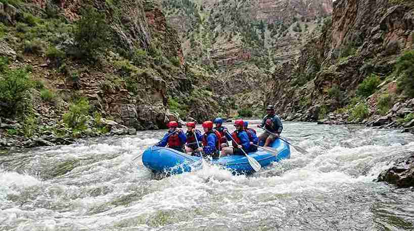
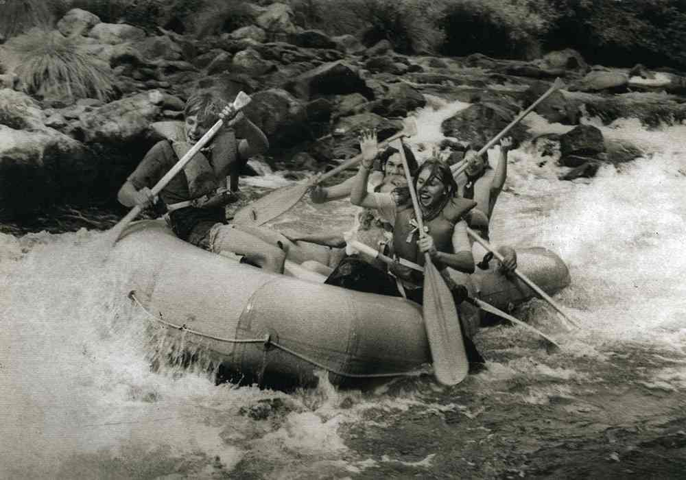
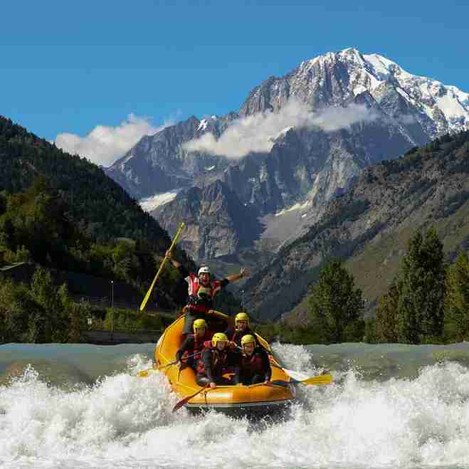
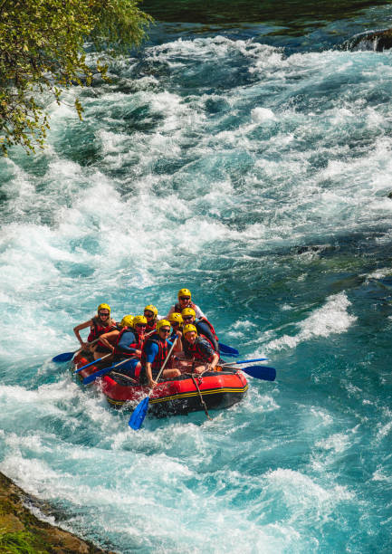
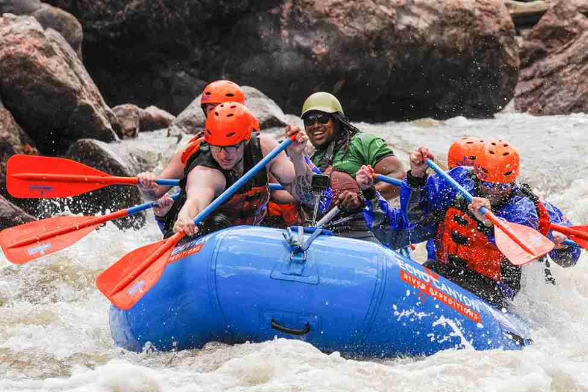
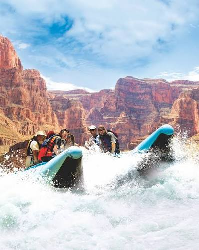
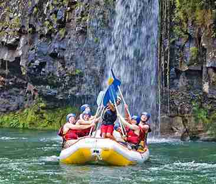

Our mission is to connect adventurers of all skill levels with the untamed beauty of the river. Guided by safety, teamwork, and respect for nature, we turn every rapid into an unforgettable memory.

Our mission is to connect adventurers of all skill levels with the untamed beauty of the river. Guided by safety, teamwork, and respect for nature, we turn every rapid into an unforgettable memory.
Founded by a small crew of passionate river guides, Rapid Rush Whitewater Rafting started with two rafts, a dusty pickup truck, and a love for canyon rivers. Over the years, we have grown into a premier outdoor outfitter while keeping our small-group spirit alive.

Today, our experienced team leads thousands of guests each season through exhilarating rapids and peaceful river stretches alike, always putting safety, education, and river conservation at the heart of every trip.




